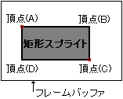

ビット |
15 | 14 | 13 | 12 | 11 | 10 | ９ | ８ |
７ | ６ | ５ | ４ | ３ | ２ | １ | ０ |
|---|
CMDCTRL
+00 |
0 | JP | 0 | 0 | 0 | 0 | 0 | 0 | Dir | 0 | 0 | 0 | 1 |
|---|
CMDLINK
+02 |
LINK指定/8H | 0 | 0 |
CMDPMOD
+04 |
MO | 0 | 0 | 0 | Pc | Cl | Cm | Me | EC | SP | カラー
モード | 色演算 |
CMDCOLR
+06 |
カラーバンク,カラールックアップテーブル/8H(LSBは00固定) |
CMDSRCA
+08 |
キャラクタアドレス/8H |
CMDSIZE
+0A |
0 | 0 | キャラクタサイズＸ/8 | キャラクタサイズＹ/8 |
CMDXA
+0C |
符号拡張 | 頂点(A)，Ｘ座標(XA) |
CMDYA
+0E |
符号拡張 | 頂点(A)，Ｙ座標(YA) |
| +10 | |
| +12 | |
CMDXC
+14 |
符号拡張 | 頂点(C)，Ｘ座標(XC) |
CMDYC
+16 |
符号拡張 | 頂点(C)，Ｙ座標(YC) |
| +18 | |
| +1A | |
CMDGRDA
+1C |
グーローシェーディングテーブル/8H |
|  |